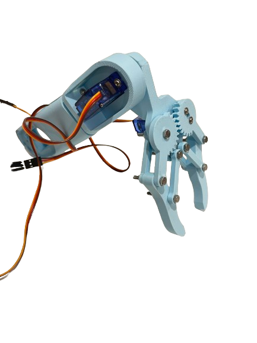

Arduino Robotic Arm
This WIP project is a fully 3d printed Arduino Uno powered robotic arm. The gripper mechanism as well as the rest of the arm was designed in SolidWorks and printed using Bambu Studio on my Bambu Lab A1 printer.
The arm uses a micro servo for the geared gripper operation, and 5 other digital servos for this arms 5DOF. It's power is supplied by a 5V 2A wall plug and uses potentiometers to rotate each servo. In future i'm planning to implement GUI using python to control and save the movements of the arm from my laptop. I also plan to increase the gripping power by swapping to more powerful servos, and increasing joint strength.